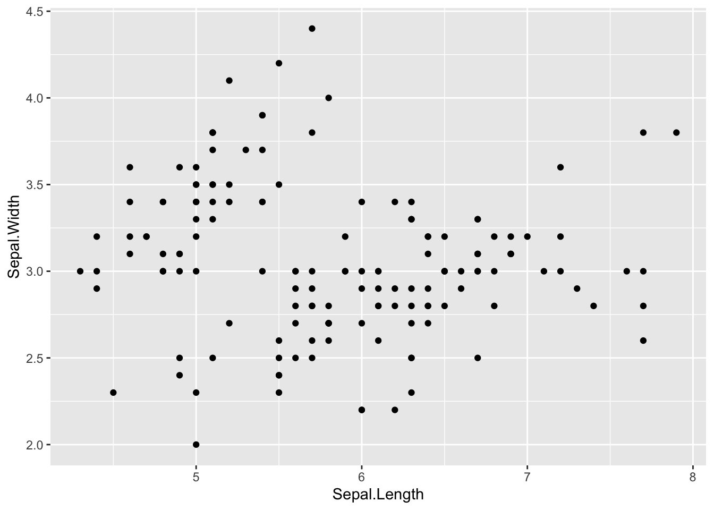
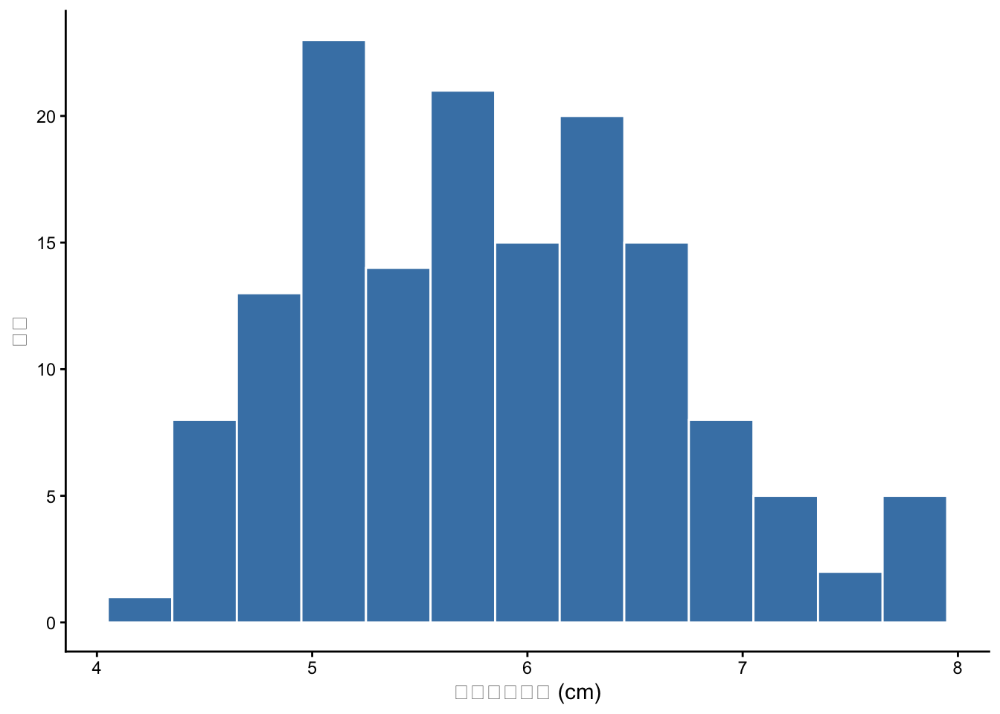
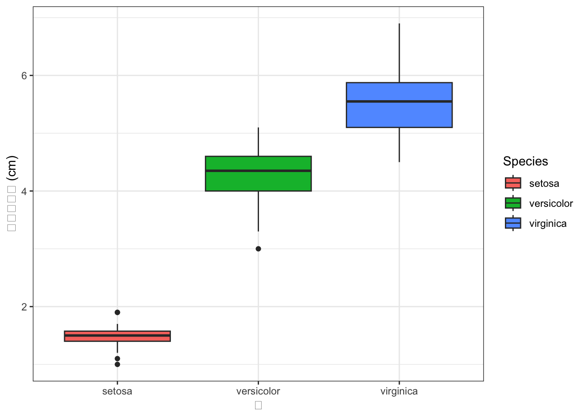
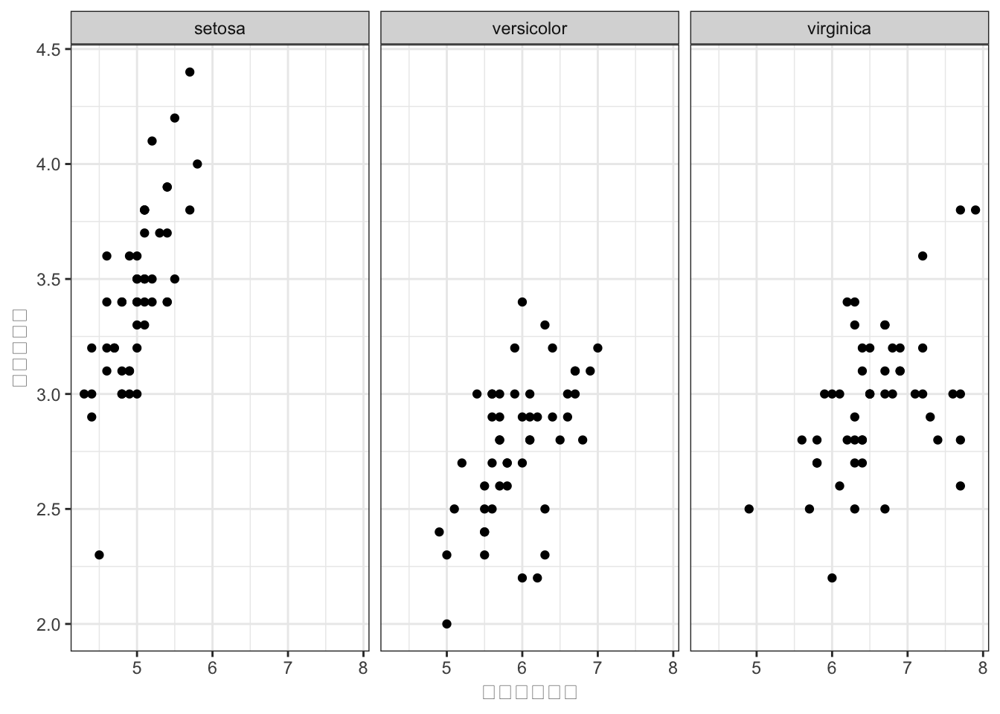
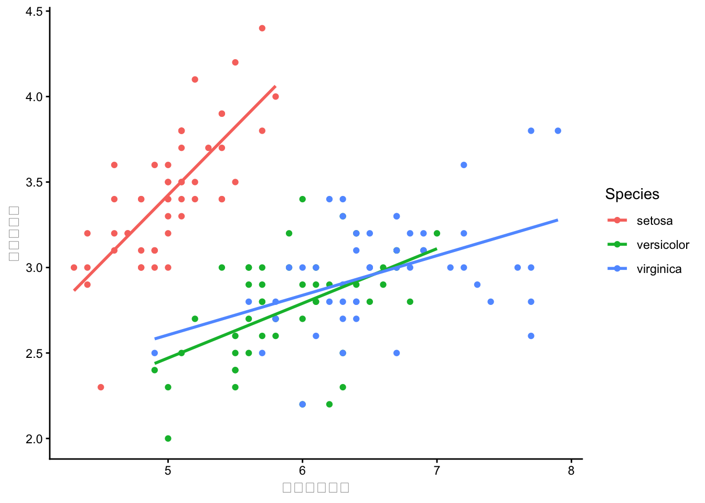
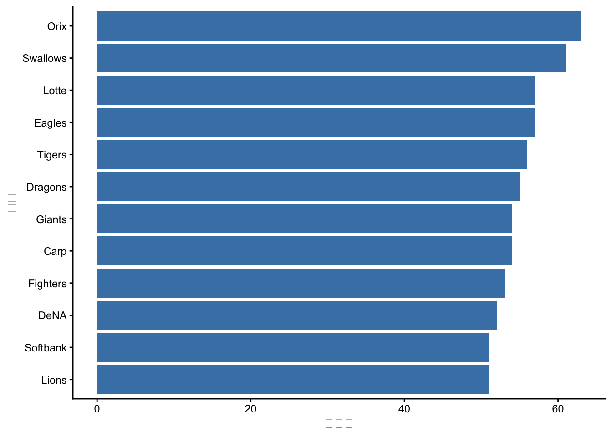
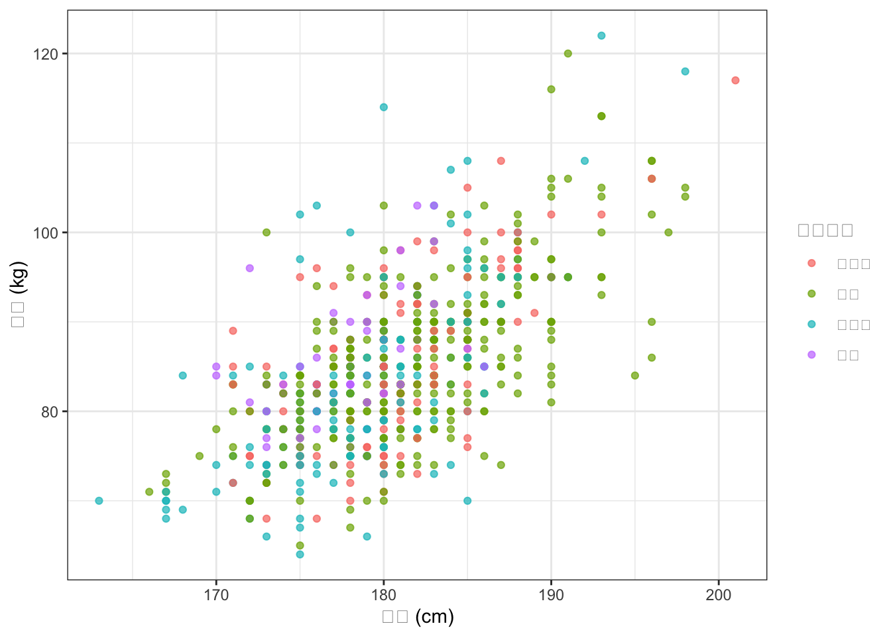
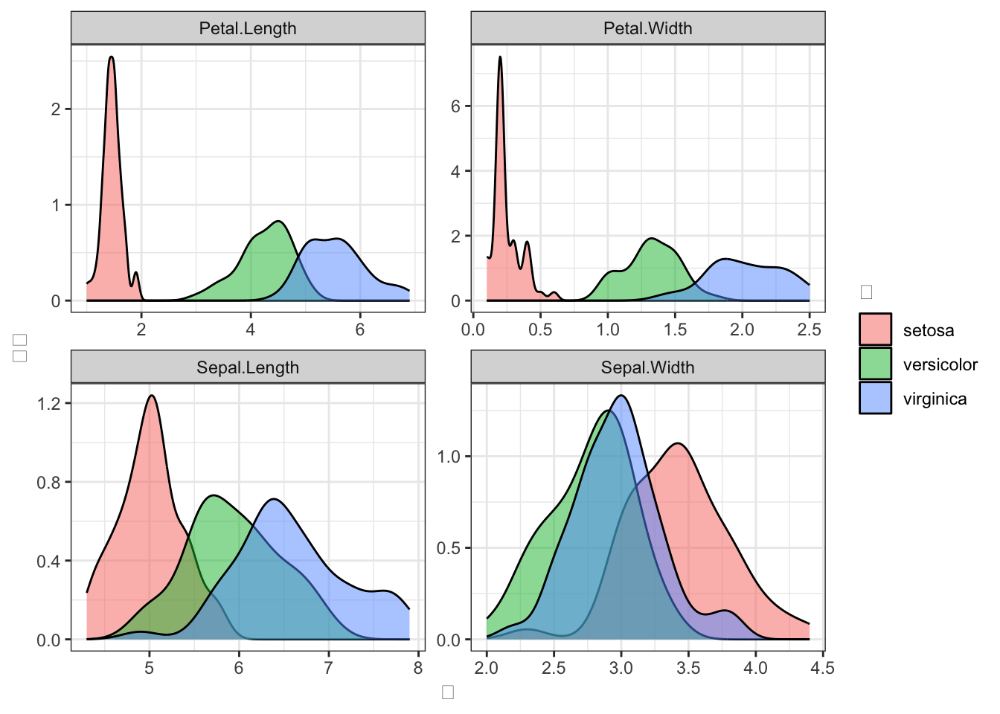

iris %>%
ggplot2::ggplot(ggplot2::aes(x = Sepal.Length, y = Sepal.Width)) +
ggplot2::geom_point()
分類: 幹（全員必須）
依存関係: U6 → U10、U9 → U10
学習目標:
aes()でデータと見た目の対応を指定できるgeom_xxx()を選択できるfacet_wrap()でグループ別パネルを作成できるlabs()とtheme_xxx()で図を仕上げられるggsave()で図をファイルに保存できる統計といえば「分析」に注目されがちですが、データ分析で最も重要なステップの1つが可視化です。数値の羅列や統計量だけでは見えない情報が、グラフにすると一目でわかることがあります。取得したデータはまず可視化するものと心がけてください。
ggplot2はtidyverseに含まれる描画パッケージです。ggは Grammar of Graphics（描画の文法）の略で、図を「文法」に従って組み立てるという発想で設計されています。
ggplot2の基本的な考え方は、レイヤの積み重ねです：
ggplot()）aes()）geom_xxx()）labs(), theme_xxx()）レイヤを+で繋いでいく点がポイントです。パイプ演算子（%>%）でデータを整形してからggplot()に渡すこともできます。
aes()は、データの変数と図の「見た目」を対応づける関数です。
| パラメータ | 意味 | 例 |
|---|---|---|
x |
X軸 | aes(x = height) |
y |
Y軸 | aes(y = weight) |
color |
点や線の色 | aes(color = Species) |
fill |
塗りつぶしの色 | aes(fill = team) |
shape |
点の形 | aes(shape = group) |
size |
点のサイズ | aes(size = salary) |
aes()の中に指定すると、データの値に応じて自動的に色や形が変わります。
| geom | 用途 | 適するデータ |
|---|---|---|
geom_point() |
散布図 | 連続×連続 |
geom_line() |
折れ線グラフ | 時系列・順序データ |
geom_histogram() |
ヒストグラム | 連続変数の分布 |
geom_density() |
密度プロット | 連続変数の分布（滑らか） |
geom_bar() |
棒グラフ（度数） | カテゴリ変数 |
geom_col() |
棒グラフ（値指定） | 集計済みデータ |
geom_boxplot() |
箱ひげ図 | グループ間の分布比較 |
geom_violin() |
バイオリンプロット | 分布の形状比較 |
geom_smooth() |
回帰線・平滑化曲線 | トレンドの可視化 |
ggplot2でレイヤを重ねるときに使う演算子はどれですか？
ggplot2ではレイヤを+で重ねます。パイプ演算子（%>%）はデータをggplotに渡すときに使いますが、レイヤの追加には使えません。
aes()関数の役割は何ですか？
aes()はaesthetic mappings（エステティック・マッピング）の略で、データの変数をx軸、y軸、色、形、サイズなどの見た目に対応づけます。
散布図を描くためのgeomはどれですか？
geom_point()は2つの連続変数の関係を点で表す散布図を描きます。geom_bar()は棒グラフ、geom_histogram()はヒストグラム、geom_line()は折れ線グラフです。
aes(color = Species)と書くと何が起きますか？
aes()の中でcolor = Speciesと指定すると、Speciesの水準（setosa, versicolor, virginica）ごとに異なる色が自動的に割り当てられ、凡例も表示されます。aes()の外でcolor = "red"のように固定値を指定する場合とは意味が異なります。
facet_wrap(~Species)は何をしますか？
facet_wrap()はデータをグループごとに分割し、それぞれを別の小さなパネル（ファセット）に表示します。1つの図の中でグループ間の比較ができます。
ggplot2のデフォルトの背景色はグレーである。白い背景にするにはどうすればよいですか？
ggplot2のデフォルトテーマはtheme_gray()で背景がグレーです。白い背景にするにはtheme_classic()やtheme_bw()を使います。
日本心理学会の投稿規定では白背景が推奨されています。
labs(x = "身長", y = "体重", title = "散布図")は何を設定していますか？
labs()は図のラベル（labels）を設定する関数です。xでX軸名、yでY軸名、titleでタイトル、subtitleでサブタイトル、captionでキャプション、colorやfillで凡例タイトルを指定できます。
ggsave()関数の主な役割は何ですか？
ggsave()はggplotで作成した図をPNG、PDF、SVGなどの形式でファイルに保存する関数です。
引数で解像度（dpi）やサイズ（width, height）を指定できます。
irisデータセットを使って、Sepal.Length（X軸）とSepal.Width（Y軸）の散布図を描いてください。

ggplot()でキャンバスを用意し、aes()で軸を指定、geom_point()で点を描きます。
10-B-1の散布図で、Speciesごとに点の色を変えてください。さらに軸ラベルとタイトルをつけてください。
aes()の中にcolor = Speciesを追加します。labs()でラベルを設定します。
irisデータのSepal.Lengthのヒストグラムを描いてください。ビン幅を0.3に設定し、テーマをtheme_classic()にしてください。
geom_histogram(binwidth = 0.3)でビン幅を指定します。

fillは棒の塗りつぶし色、colorは棒の枠線の色です。これらはaes()の外に書いているので、全ての棒に同じ色が適用されます。
irisデータで、SpeciesごとのPetal.Lengthの分布を箱ひげ図で比較してください。

箱ひげ図は中央値、四分位範囲、外れ値を一目で把握できるので、グループ間の比較に便利です。
irisデータの散布図（Sepal.Length × Sepal.Width）をSpeciesごとに別パネルに分割してください。
facet_wrap(~Species)を追加します。

facet_wrap()でSpeciesの3水準がそれぞれ別パネルに表示されます。全パネルで軸の範囲が揃うので、比較が容易です。
irisデータの散布図に回帰直線を追加してください。Speciesごとに色分けし、それぞれに回帰直線を引いてください。
geom_smooth(method = "lm")で回帰直線を追加します。aes(color = Species)がggplot全体に設定されていれば、geom_smoothもSpeciesごとに分かれます。

se = FALSEで信頼区間の帯を非表示にしています。method = "lm"は線形回帰です。
BaseballDecade.csvを読み込み、球団（team）ごとの選手数を棒グラフで表示してください。横向きにして、選手数が多い順に並べてください。
coord_flip()で横向きにできます。reorder()で並べ替えができます。

reorder(team, team, length)は、teamをその出現回数（length）で並べ替えます。coord_flip()で軸を反転させると、長い球団名も読みやすくなります。
BaseballDecade.csvから2020年度のデータを使い、身長（height）と体重（weight）の散布図を描いてください。守備位置（position）で色分けし、テーマはtheme_bw()にしてください。

alpha = 0.7で点を少し透明にすると、重なった点が見やすくなります。
irisデータをロング型に変換し（U8で学んだpivot_longer()を使って）、4つの測定値の分布をSpeciesごとに密度プロットで比較してください。facet_wrap()で測定値ごとにパネルを分けてください。
pivot_longer(-Species)でロング化すると、name列に測定値名、value列に値が入ります。facet_wrap(~name, scales = "free")で各パネルの軸範囲を独立させます。

U7（dplyr）→ U8（tidyr）→ U10（ggplot2）の連携です。データの整形と可視化を組み合わせることで、柔軟な分析が可能になります。
10-B-9で作成した図をggsave()でPNGファイルとして保存するコードを書いてください。解像度300dpi、サイズは幅8インチ×高さ6インチにしてください。
p <- iris %>%
tidyr::pivot_longer(-Species) %>%
ggplot2::ggplot(ggplot2::aes(x = value, fill = Species)) +
ggplot2::geom_density(alpha = 0.5) +
ggplot2::facet_wrap(~name, scales = "free") +
ggplot2::labs(x = "値", y = "密度", fill = "種") +
ggplot2::theme_bw()
ggplot2::ggsave("iris_density.png", plot = p, width = 8, height = 6, dpi = 300)ggplotオブジェクトをpに保存してからggsave()に渡しています。plot引数を省略すると、最後に表示した図が保存されます。
課題: BaseballDecade.csvを使って、「球団ごとの年俸分布の年度変化」を可視化してください。
どのようなグラフが適切か（箱ひげ図、バイオリンプロット、リッジプロット等）をAIと相談しながら決め、完成させてください。
考えるポイント：
提出物: AIとの対話ログ、完成したコードと図、選んだグラフの理由。
課題: R Graph Gallery を見て、自分の卒論で使えそうな図を1つ選んでください。
AIに相談しながら、irisまたはBaseballDecade.csvのデータでその図を再現してみてください。
提出物: 選んだ図のURL、再現コード、元の図との違い・工夫した点。
課題: 以下の4つの図を1枚にまとめた複合図を作成してください。
AIに相談しながら、patchworkパッケージなどを使ってレイアウトを整えてください。
提出物: AIとの対話の記録、完成した複合図のコード。
このユニットでは、ggplot2によるデータの可視化を学びました：
ggplot() + aes() + geom_xxx() のレイヤ構造aes(color = ...), aes(shape = ...)facet_wrap()でグループ別パネル表示labs()でラベル、theme_xxx()でテーマ設定ggsave()でファイル出力ggplot2はdplyr（U7）やtidyr（U8）と組み合わせることで真価を発揮します。データの整形→可視化の流れをパイプで繋げて書けるようになりましょう。
進捗: あなたは今 10-C-8 まで完了しました！（と仮定）次は 10-B-1 に進みましょう。